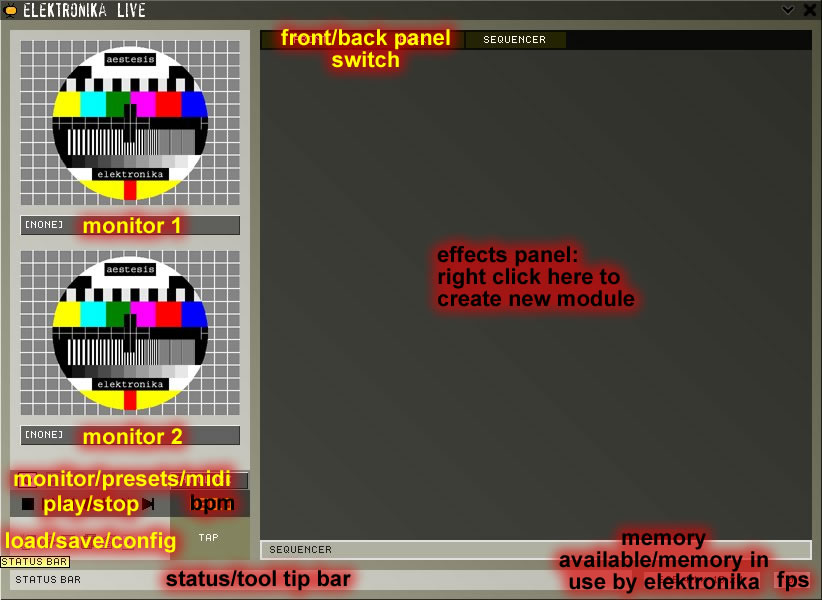
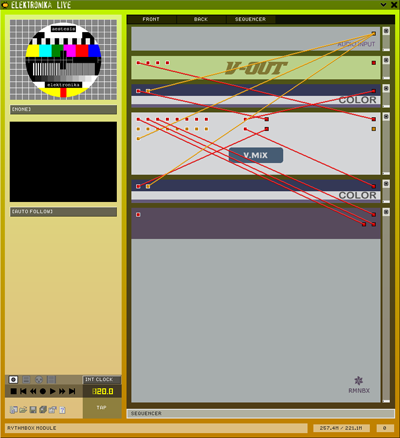
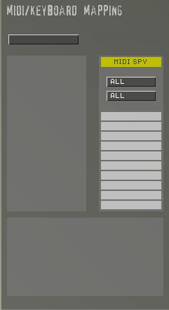
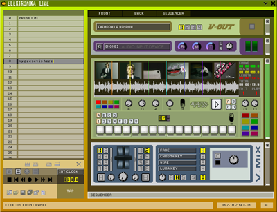

eleKtroniKa
help file
elektronika live video software
elektronika live is video software for VJs and live visual performers. it can be used in real time when DJs are playing, or integrated using midi into a live audio/video set. you can also link elektronika to any external midi sequencer and create midi control loops for elektronika using the sequencer which can then be turned on and off during a show
general view

monitor 1
and monitor 2 are used to preview the internal video or audio stream
start/stop switch the elektronika render stream on/off (you can also use the space key)
load/save/config display the load/save menu or the config dialog
status/tool tip bar display alerts, errors or info about the button under the mouse pointer
effects panel the effects modules are displayed here. you can switch from front to rear view using the tab key, move up/down using the mouse wheel or create or delete modules using the context menu (right click)
monitor/presets/midi
switch between monitors, midi presets and midi mode
config dialog

video select
the video stream size
frames select the
frame rate for the video stream
loop maximum size of the video loop in memory (eg: rythmbox or loop107 modules) and video loop compression in memory (none or jpeg)
midi in select the
midi in device
midi out select the midi out device
preset select the midi channel for the program change event remoting preset loading
splash screen turn the splash screen on or off
tool tips activate
tool tips
register open the register dialog box if not registered, otherwise display the current registered user
rear view

in the rear view you can plug together the effects with virtual video or audio cables. to do this just click on a pin and drag the link to the desired destination pin (eg video out to video in)

you can have an infinite number of cables plug onto an out pin

context menu
elektronika uses
context menus to manage the creation and deletion of effects,
to display
the about dialog box, to change the elektronika interface background and to display
the mapping dialog box (keyboard/midi)
mapping dialog box
to display this dialog, just right click on an effect button and select mapping. to use midi you must select a midi-in device in the config/properties dialog box

the dialog is split into 3 parts, on the top right is the midi events spy, on the top left, the assigned midi event and at the bottom the keyboard key or dial assigned
midi mapping
the midi query displays
all midi input events (note on/control change). you can filter these events by setting the two filters: channel and event type. pressing the corresponding event will assign it to the chosen key. you can also edit the desired event by using the list in the assign dialog.
min/max can adjust the range used on an effect controller. swap the min/max value reverses the direction of the controller.
the 'absolute' list can be used to change the type of controller(absolute, relative 1, 2 or 3, absolute - 14 bits, relative 1, 2, or 3 - 14 bits)
some elektronika interface buttons need more than one event to be controlled by midi (eg colour picker that uses 3 controllers: R, G and B), just select the other controller by selecting it in the list that displays 'key 4 states'
keyboard mapping
select the type of
keyboard control:
'press' or 'switch' to control button on/off or select type
of control
'select' or 'cycle' to control pattern switch or the same
type of control
then select the key event and type the desired key on your keyboard
presets
midi presets can be stored and recalled for each module

interface controls
controls can be reset by selecting them and pressing alt
to select a colour: left click on the box and move up and down for luminosity, left and right for hue,and ctrl and up and down for saturation. or just double click and
use the dropper to pick a colour from the spectrum at the bottom of the panel or anywhere on the background.
each module has its own power switch: the black button on the right. each module displays its own processor usage below the power button
www.aestesis.org